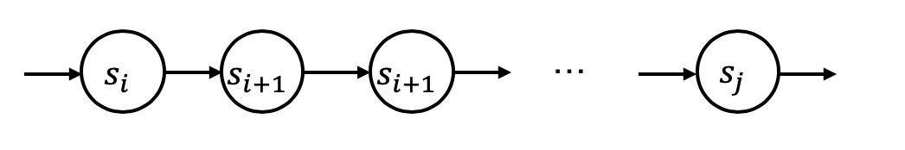
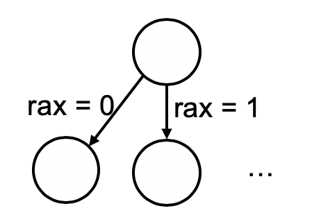

<html>
  <Head>
<meta http-equiv="Content-Type" content="text/html; charset=utf-8">

    
<link rel="stylesheet" href="../static/css/bootstrap.min.css"/>
<link rel="stylesheet" href="../static/css/bootstrap-theme.min.css"/>


    <link rel="stylesheet" href="../static/css/fonts/crmison.css"/>
    <link rel="stylesheet" href="../static/css/fonts/fira_code.css"/>
    <link rel="stylesheet" href="../static/css/fonts/ptsans.css"/>
    <link rel="stylesheet" href="../static/css/katex.min.css"/>
    <link rel="stylesheet" href="../static/css/wiki.css"/>
    <link rel="stylesheet" href="../static/css/codehilite.css"/>

    <script src="../static/js/jquery.min.js"></script>
    <script src="../static/js/bootstrap.bundle.min.js"></script>
    <script src="../static/js/katex.min.js"></script>
    
    

    <title>程序的状态机模型及其应用</title>
  </Head>
  <body>
   
   
<nav class="navbar fixed-top navbar-expand-lg navbar-dark bg-dark">
  <a class="navbar-barnd" href="index.html">Yanyan's Wiki</a>
  <div class="collapse navbar-collapse">
    <div class="navbar-nav">
      <a class="nav-item nav-link active" href="OS2020.html">
        
        操作系统 (2020)</a>
      <a class="nav-item nav-link active" href="SysLab2020.html">
        计算机系统综合实验 (2020)</a>
      <a class="nav-item nav-link active" href="ICS_NJU.html"> 加入我们</a>
    </div>
    <form class="form-inline" autocomplete="off">
      <input id="token-input" type="text" oninput="login();" maxlength="16"
        data-toggle="tooltip" data-placement="bottom"
        title="用于确定身份的作业提交 SHA-1 hash digest。更改后回车或刷新网页生效"></input>
    </form>
  </div>
</nav>

<center>
  <div class="article-container">
    <div class="article">
      <h1 id="_1">程序的状态机模型及其应用</h1>
<div markdown="1"><div class="fenced fenced-blue"><div>
<h4 id="_1">本讲阅读材料</h4>
<p>本讲的阅读材料是本文档 (讲义)。此外，带着 “程序是状态机” 的视角，你可以试着自己画出 Peterson 算法的状态机并试图理解它：试着把 slides 里的 Peterson 算法改写成状态机每次只能执行一次 load/store，并证明它的正确性。这个练习只是帮助大家掌握 “程序是状态机” 这一基本工具。这门课会频繁用到这个工具。设计 (无锁) 的并发算法并不是这门课的主要内容：</p>
<blockquote>
<p>For some reason, developing locks that work without special hardware support became all the rage for a while, giving theory-types a lot of problems to work on. Of course, this line of work became quite useless when people realized it is much easier to assume a little hardware support (and indeed that support had been around from the earliest days of multiprocessing). Further, algorithms like the ones above don’t work on modern hardware (due to relaxed memory consistency models), thus making them even less useful than they were before. Yet more research relegated to the dustbin of history...</p>
</blockquote>
<p>此外，有兴趣阅读论文的同学，可以考虑查找讲义中的阅读材料。你会发现带着 “程序/计算机系统是状态机” 这一视角，这些激动人心的 “黑科技” 理解起来会变得 (稍稍) 容易一些：</p>
<ul>
<li>G. Dunlap, et al. ReVirt: Enabling intrusion analysis through virtual-machine logging and replay. In Proc. of OSDI, 2002.</li>
<li>C. Cadar, D. Dunbar, D. Engler. KLEE: Unassisted and automatic generation of high-coverage tests for complex systems programs. In Proc. of OSDI, 2008.</li>
<li>R. Jhala and R. Majumdar. Software model checking. <em>ACM Computing Surveys</em>, 41(4), 2009.</li>
</ul>
</div></div></div>

<h2 id="_2">状态机</h2>
<p>“状态机” 是对物理世界运行的抽象数学模型。熟悉图论的同学，不妨把状态机看成是有向图 <math class="inline-math">G(V,E)</math>，其中：</p>
<ul>
<li><p>图的每个节点 <math class="inline-math">s \in V</math> 代表一个 “状态”，不同的节点通常代表不同的状态，例如下图是一个 (可怜的、没有娱乐的) 人状态的抽象——他要么在工作，要么在家，要么在床上：</p>
<p></img></p>
</li>
<li><p>图中的边 <math class="inline-math">(s_1, s_2) \in E</math> 代表状态的转换，有时也写作 <math class="inline-math">s_1 \to s_2</math>。当状态机系统的外部发生变化时，状态机的状态随之会发生改变，例如当前状态是 “在家”，那么既有可能进入 “床上” 的状态睡觉，也有可能乘地铁上班，进入 “工作” 的状态。</p>
</li>
<li><p>图中的边有时有标签 (label)，表示系统外界发生的具体变化。</p>
</li>
</ul>
<p>这个概念非常之简单 (甚至 trivial) 以至于你会觉得它有什么用？答案有两点：</p>
<ol>
<li>状态机是物理世界的抽象，几乎任何物理对象都或多或少可以写成状态机。一旦状态机建立，我们就得到了一个图——于是我们可以用图论的算法去研究状态机的性质。例如，当我们写出一个并发程序 (并发算法、并发协议) 的状态机后，就能用图论的语言定义并发程序算法的 “正确性”，并在 <math class="inline-math">|E|</math> 的多项式时间内完成对算法的证明。</li>
<li>计算机系统的本质天然是数字逻辑电路实现的状态机，因此状态机模型也可以帮助我们理解计算机系统的方方面面。状态机的视角帮助我们理解处理器设计、程序调试、自动测试等 non-trivial 的计算机系统解决方案。</li>
</ol>
<h2 id="_3">(串行) 程序的状态机模型</h2>
<p>我们不妨把运行在操作系统上的程序看成是状态机。在现代计算机系统上，程序只需要有代码、数据 (假设只有静态分配的数据；动态分配数据需要调用操作系统)、堆栈和寄存器，程序就按固定的规则执行：</p>
<ul>
<li>CPU 根据当前的 PC 指针 (例如 x86-64 的 <code>rip</code> 寄存器)，在内存中取出一条指令；</li>
<li>对指令进行译码、执行，指令将按照手册上约定的行为，修改 CPU 的寄存器或内存。</li>
</ul>
<p>在《计算机系统基础》的编程实验中，我们已经切实地体会过这个过程。而在 gdb 中，我们也可以查看 (被暂停的) 进程运行时的状态：</p>
<div class="codehilite"><pre><span></span>(gdb) info registers   // 查看寄存器
rax            0x55555555463a   93824992233018
rbx            0x0  0
...
rip            0x55555555463e   0x55555555463e &lt;main+4&gt;
eflags         0x246    [ PF ZF IF ]
...
(gdb) x/16i 0x55555555463e   // 查看内存
=&gt; 0x55555555463e &lt;main+4&gt; :  lea    0x9f(%rip),%rdi        # 0x5555555546e4
   0x555555554645 &lt;main+11&gt;:  callq  0x555555554510 &lt;puts@plt&gt;
   0x55555555464a &lt;main+16&gt;:  mov    $0x0,%eax
   0x55555555464f &lt;main+21&gt;:  pop    %rbp
   0x555555554650 &lt;main+22&gt;:  retq   
   ...
</pre></div>


<p>如果使用单步执行一条指令，我们将会看到状态的变化，而且状态的变化符合是 <code>rip</code> 寄存器位置指令的行为。因此，我们不妨把所有的寄存器/内存的<strong>数值</strong>作为程序的状态，程序在两个时刻寄存器/内存数值只要有任何不同，就认为是两个不同的状态。</p>
<p>程序每执行一条指令，状态就会发生变化 (指令执行的结果)。我们用 <math class="inline-math">(M,R)</math> 来表示程序的状态，其中 <math class="inline-math">M</math> 是程序所有内存的数值；<math class="inline-math">R</math> 是程序所有寄存器的数值。例如，假设 <math class="inline-math">M[R[\textrm{rip}]]</math> 的字节序列是 <code>48 c7 c0 01 00 00 00</code>，即 <code>movl $1, %rax</code>。那么，执行这条指令后程序的状态是 <math>(M',R')</math>，则有：</p>
<p><math class="inline-math">R'[\textrm{rip}] = R[\textrm{rip}] + 7</math> (下一条指令位于 7 个字节之后), <math class="inline-math">R'[\textrm{rax}] = 1</math> (rax 寄存器被设置为 1)</p>
<p>考虑程序一共使用 16 MiB 的内存，有 18 个 64-bit 寄存器，这些状态一共有 <math class="inline-math">16 \cdot 2^{20} \cdot 8 + 18 \cdot 64 = 134,218,880</math> bits。因此，这个程序至多有 <math class="inline-math">2^{134,218,880}</math> 种不同的状态。这是个天文数字——试图把程序所有状态构成的状态机建立出来是完全不切实际的。但这不妨碍我们用状态机模型理解程序的执行。</p>
<h3 id="deterministic-non-deterministic">确定 (deterministic) 和不确定 (non-deterministic) 的指令</h3>
<p>大部分指令在给定执行前的状态时，执行的结果就是确定的，例如 <code>push</code>, <code>mov</code> 都是这样确定的指令。如果 <math>(M,R)</math> 状态下 PC 指针位置的指令是确定的指令，那么 <math>(M,R)</math> 就拥有唯一的后续状态——事实上，程序执行中绝大部分指令都是确定的，因此程序对应的状态机就像是下图这样：</p>
<p></img></p>
<p>如果做一个极端一些的假设，程序中所有的指令都是确定的，且由于状态空间是有限的，因此一定会形成 “循环”，即指令执行一段时间后，会到达一个已经经过的状态，然后继续周而复始执行。的确如此，你可以试着编写一个没有不确定性指令、没有系统调用、没有 undefined behavior 的程序，它将无法终止！</p>
<p>程序的不确定性来自于有不确定性的指令，例如，Intel 处理器提供了 <code>rdrand</code> 指令：</p>
<div class="codehilite"><pre><span></span><span class="cp">#include</span> <span class="cpf">&lt;stdio.h&gt;</span><span class="cp"></span>
<span class="cp">#include</span> <span class="cpf">&lt;stdint.h&gt;</span><span class="cp"></span>

<span class="kt">int</span> <span class="nf">main</span><span class="p">()</span> <span class="p">{</span>
  <span class="kt">uint64_t</span> <span class="n">val</span><span class="p">;</span>
  <span class="k">asm</span> <span class="k">volatile</span> <span class="p">(</span><span class="s">"rdrand %0"</span><span class="o">:</span> <span class="s">"=r"</span><span class="p">(</span><span class="n">val</span><span class="p">));</span>
  <span class="n">printf</span><span class="p">(</span><span class="s">"rdrand returns %016lx</span><span class="se">\n</span><span class="s">"</span><span class="p">,</span> <span class="n">val</span><span class="p">);</span>
<span class="p">}</span>
</pre></div>


<p>将会生成一条 <code>rdrand %rax</code> 的汇编代码。如果用 gdb 调试，会发现每次程序运行，<code>rax</code> 寄存器都将被赋值为随机值，也就是在 <code>rdrand</code> 指令执行的状态，可能有多种不同的运行结果，状态机也在此产生了 <math>2^{64}</math> 个 “分岔”：</p>
<p></img></p>
<p>另一个重要的不确定性指令是系统调用 (例如在 x86-64 上是 <code>syscall</code> 指令)。例如，<code>_exit</code> 系统调用将会销毁当前进程的执行，相当于从外界把状态机 “消灭”，进入一个 “不存在” 的状态。再比如 <code>read</code> 系统调用：</p>
<ol>
<li>根据读入流的情况，有可能返回 -1 (失败)、0 (end of file)、某个正数代表读取的字节数；</li>
<li><code>read</code> 传入的 <code>buf</code> 可能会被操作系统修改为读取到的数据。</li>
</ol>
<p>因此，根据当前调用 <code>read</code> 时物理设备、操作系统等的状态，<code>read</code> 系统调用可能的后续状态就更多了。</p>
<h2 id="_4">状态机模型的应用</h2>
<p>我们在上课时，介绍了如何用状态机模型理解 time-travel debugging 和 record & replay。这两个计算机系统领域的 “黑科技” 在状态机意义下的解释非常清楚明确：</p>
<ul>
<li>给一次程序的执行 (<math class="inline-math">s_0 \to s_1 \to\ldots</math>)，如果记录下所有的状态 <math class="inline-math">s_i</math>，我们自然可以随时查看 <math class="inline-math">s_i</math> 的状态，从而实现 “时间旅行”。但这样记录状态的代价太大了——当然，我们知道通常 <math class="inline-math">s_0</math> 的状态是容易记录的；由于每条指令的执行通常只影响数量很少的寄存器和内存，我们可以记录 <math class="inline-math">s_i</math> 和 <math class="inline-math">s_{i+1}</math> 之间 “不同” 的部分，就像 <a href="https://www.geeksforgeeks.org/diff-command-linux-examples/">diff</a>，我们就可以像给程序 “打补丁” 一样自由地向前或向后执行。</li>
<li><p>如果我们对 “时间穿梭” 没有兴趣，只是想重现一次程序执行的结果。假设所有指令都是确定的，那么只要记录下 <math class="inline-math">s_0</math>，无论执行多少次，都必然得到完全相同的执行结果。对于应用程序来说，产生不确定性的指令数量是很少的 (rdrand, syscall 等)。因此，只需要在这些指令之后记录下指令带来的不确定后果，例如：</p>
<ul>
<li>对于 rdrand，记录下得到的随机数值；</li>
<li>对于 syscall，记录下系统调用返回的结果，例如 <code>read</code> 需要记录它的返回值和读到的数据。</li>
</ul>
<p>然后，我们只要在重放 (replay) 时，遇到这些不确定的指令时不实际执行，而是用记录下的结果替代，就能实现程序行为的精准重放。同理，也可以实现整虚拟机完整执行的记录和重放。事实上，很多游戏模拟器就内置了这样的记录功能。有兴趣的同学可以阅读讲义头部推荐的 ReVirt 论文。</p>
</li>
</ul>
<p>在有了状态机的视角之后，我们就有了具体实现这些技术的切入点。例如，如果我们希望在调试器上实现 time-travel debugging，我们只需要在单步模式下分析当前 PC 指针下的指令，解析出该指令所有可能产生的副作用，并予以记录——事实上，gdb 的确就是这么实现的。</p>
<p>再例如，如果我们要实现 record & replay，一个重要的问题是如何 “拦截” 那些具有不确定性的指令。通过查阅资料 (互联网、论文、文档)，我们一方面可以使用 ptrace 系统调用，或使用编译器提供的接口拦截指定的函数调用，另一方面也可以通过修改程序的二进制代码 (例如像 gdb 一样给有不确定性的指令打补丁)，使有不确定性的指令执行时跳转到指定位置的代码。</p>
<p>计算机系统里没有什么 “魔法”——计算机系统就是一个状态机。哪怕是最顶尖的研究成果，也是在这个框架下完成的。</p>
<h2 id="_5">并发程序的状态机模型</h2>
<p>在课堂上，我们反复演示 (和强调) 并发程序的多个线程拥有独立的寄存器、堆栈 (但不同线程的堆栈位于同一个地址空间中，我们已经在课堂上展示过)，共享代码和数据。因此并发程序的状态表示是刚才我们提到 <math class="inline-math">(M, R)</math> 模型的一个自然扩展：系统中仍然有一份共享的内存，但每个线程都有独立的寄存器。因此假设系统中有 <math class="inline-math">n</math> 个线程，那么状态看起来就是：</p>
<p><span class="center"><math class="inline-math">(M, R_1, R_2, \ldots, R_n)</math></span></p>
<p></img></p>
<p>注意到多线程程序 <math class="inline-math">(M, R_1, R_2, \ldots, R_n)</math> 其实可以看成是若干个单线程程序。在任意时刻，状态的转换就是 “选择一个线程执行一条指令”：</p>
<ul>
<li>选择线程 <math class="inline-math">1</math> 执行：<math class="inline-math">(M, R_1) \to (M_1', R_1')</math>，得到状态 <math class="inline-math">(M_1', R_1', R_2, \ldots, R_n)</math>；</li>
<li>选择线程 <math class="inline-math">2</math> 执行：<math class="inline-math">(M, R_2) \to (M_2', R_2')</math>，得到状态 <math class="inline-math">(M_2', R_1, R_2', \ldots, R_n)</math>；</li>
<li><math class="inline-math">\ldots</math></li>
<li>选择线程 <math class="inline-math">n</math> 执行：<math class="inline-math">(M, R_n) \to (M_n', R_n')</math>，得到状态 <math class="inline-math">(M_n', R_1, R_2, \ldots, R_n')</math>；</li>
</ul>
<p>也就是说，<strong>并发程序执行的每一步都是不确定的</strong>！并发程序的状态机模型如下图所示：</p>
<p></img></p>
<p>想要在实际的多线程程序上验证这个模型，我们不妨使用 <code>pmap</code> 命令打印一个多线程程序的地址空间映射：</p>
<div class="codehilite"><pre><span></span>$ ./hello-mt.out &
[1] 18401
$ pmap $!  # $! 是上一个后台进程的 pid
18401:   ./hello-mt.out
00005629379d2000      4K r-x-- hello-mt.out
0000562937bd2000      4K r---- hello-mt.out
0000562937bd3000      4K rw--- hello-mt.out
00005629387e7000    132K rw---   [ anon ]
00007fde98000000    132K rw---   [ anon ]
00007fde98021000  65404K -----   [ anon ]
00007fde9dd7c000      4K -----   [ anon ]
00007fde9dd7d000   8192K rw---   [ anon ]
00007fde9e57d000      4K -----   [ anon ]
00007fde9e57e000   8192K rw---   [ anon ]
</pre></div>


<p>如果在每个线程打印局部变量的地址，机会发现局部变量的确位于不同的 8192 KiB 内存映射区域，即我们假想的状态机模型的确符合操作系统上线程的实现。</p>
<div markdown="1"><div class="fenced fenced-blue"><div>
<h4 id="_1">动手实践</h4>
<p>你可以试一试打印多线程程序每个线程局部变量的地址，并和 <code>pmap</code> 的结果对比，这将加深你对这个问题的认识，除此之外，在操作系统上实际编写一些程序，也能让你遇到一些只是学习理论未必会遇到的 “坑”，进一步增进你的理解——经验的积累使你的系统能力不断增长，不知不觉就会成为这一方面的专家。</p>
</div></div></div>

<p>事实上，将线程的堆栈放置在同一个地址空间中，在实现上既比较容易，同时对 C 程序的执行也是非常必要的，例如我们可以写出以下代码：</p>
<div class="codehilite"><pre><span></span><span class="kt">int</span> <span class="o">*</span><span class="n">shared</span><span class="p">;</span>

<span class="kt">void</span> <span class="nf">thread1</span><span class="p">()</span> <span class="p">{</span>
  <span class="kt">int</span> <span class="n">x</span><span class="p">;</span>
  <span class="p">...</span>
  <span class="n">shared</span> <span class="o">=</span> <span class="o">&</span><span class="n">x</span><span class="p">;</span> <span class="c1">// 局部变量的地址</span>
  <span class="p">...</span>
<span class="p">}</span>
<span class="kt">void</span> <span class="nf">thread2</span><span class="p">()</span> <span class="p">{</span>
  <span class="p">...</span>
  <span class="o">*</span><span class="n">shared</span> <span class="o">=</span> <span class="mi">1</span><span class="p">;</span> <span class="c1">// 向另一个线程的堆栈中写入输入；</span>
               <span class="c1">// 只要 `thread1()` 不返回，这个写入就是合法的</span>
  <span class="p">...</span>
<span class="p">}</span>
</pre></div>


<p>这个模型帮我们更好地理解了什么是 “多线程程序”。所谓 “多线程程序是若干个共享内存的执行流”，不再是一个抽象、虚幻的概念，而是可以形式化地精确定义行为的数学对象。</p>
<p><math class="inline-math">n</math> 个线程的并发程序，若每个线程执行 <math class="inline-math">m</math> 条指令，就算所有指令都是确定的，不同的执行顺序也多达 <math class="inline-math">n^{O(mn)}</math>，这根本就是个天文数字，也难怪并发程序的执行难理解了——冷不丁的犄角旮旯里就藏着并发的 bug。</p>
<div markdown="1"><div class="fenced fenced-green"><div>
<h4 id="time-travel-debugging-record-and-replay">思考题：在并发程序上实现 time-travel debugging 或 record and replay</h4>
<p>因为并发多线程的调度 (指令的执行顺序) 是重要的不确定性来源，因此想要再时间上回溯或是重放执行，就必须把因线程调度导致的不确定性记录下来——例如，记录所有共享内存访问的顺序。这是一个非常有挑战性的问题，jyy 的博士论文就在这方面做了一些理论和实际的工作——甚至提出了一个有些悲观的猜想 (做了部分情况的证明)：在没有硬件机制的帮助下，如果想观测/记录并发程序的执行，我们要么不可避免地在程序里增加同步操作，要么就要在重放时付出 NP-Completeness 的代价。</p>
</div></div></div>

<h2 id="_6">理解并发程序的执行</h2>
<p>并发程序的状态机模型把并发程序的理解问题转换成了图论问题。在这里，我们举的是 Peterson 算法的例子——互联网上有大量的解释，因此我们在这里不再赘述。请大家跟随上课视频，画出 Peterson 算法的状态机，并证明它的正确性：</p>
<div class="codehilite"><pre><span></span><span class="kt">int</span> <span class="n">turn</span> <span class="o">=</span> <span class="n">T1</span><span class="p">,</span> <span class="n">x</span> <span class="o">=</span> <span class="mi">0</span><span class="p">,</span> <span class="n">y</span> <span class="o">=</span> <span class="mi">0</span><span class="p">;</span>

<span class="kt">void</span> <span class="nf">thread1</span><span class="p">()</span> <span class="p">{</span>
  <span class="p">[</span><span class="mi">1</span><span class="p">]</span> <span class="n">x</span> <span class="o">=</span> <span class="mi">1</span><span class="p">;</span> <span class="n">turn</span> <span class="o">=</span> <span class="n">T2</span><span class="p">;</span>
  <span class="p">[</span><span class="mi">2</span><span class="p">]</span> <span class="k">while</span> <span class="p">(</span><span class="n">y</span> <span class="o">&&</span> <span class="n">turn</span> <span class="o">==</span> <span class="n">T2</span><span class="p">)</span> <span class="p">;</span>
  <span class="p">[</span><span class="mi">3</span><span class="p">]</span> <span class="c1">// critical section</span>
  <span class="p">[</span><span class="mi">4</span><span class="p">]</span> <span class="n">x</span> <span class="o">=</span> <span class="mi">0</span><span class="p">;</span>
<span class="p">}</span>

<span class="kt">void</span> <span class="nf">thread2</span><span class="p">()</span> <span class="p">{</span>
  <span class="p">[</span><span class="mi">1</span><span class="p">]</span> <span class="n">y</span> <span class="o">=</span> <span class="mi">1</span><span class="p">;</span> <span class="n">turn</span> <span class="o">=</span> <span class="n">T1</span><span class="p">;</span>
  <span class="p">[</span><span class="mi">2</span><span class="p">]</span> <span class="k">while</span> <span class="p">(</span><span class="n">x</span> <span class="o">&&</span> <span class="n">turn</span> <span class="o">==</span> <span class="n">T1</span><span class="p">)</span> <span class="p">;</span>
  <span class="p">[</span><span class="mi">3</span><span class="p">]</span> <span class="c1">// critical section</span>
  <span class="p">[</span><span class="mi">4</span><span class="p">]</span> <span class="n">y</span> <span class="o">=</span> <span class="mi">0</span><span class="p">;</span>
<span class="p">}</span>
</pre></div>


<div markdown="1"><div class="fenced fenced-green"><div>
<h4 id="_1">思考题：为什么多此一举？</h4>
<p>Peterson 算法中有三个变量，对应了现实中 <math class="inline-math">T_1</math> 的旗子、<math class="inline-math">T_2</math> 的旗子和一块牌子。这似乎是必不可少的——你可以试试如果只用旗子的互斥，例如：</p>
<div class="codehilite"><pre><span></span><span class="kt">void</span> <span class="nf">thread1</span><span class="p">()</span> <span class="p">{</span>
  <span class="n">x</span> <span class="o">=</span> <span class="mi">1</span><span class="p">;</span>
  <span class="k">while</span> <span class="p">(</span><span class="n">y</span><span class="p">);</span>
<span class="p">}</span>
<span class="kt">void</span> <span class="nf">thread2</span><span class="p">()</span> <span class="p">{</span>
  <span class="n">y</span> <span class="o">=</span> <span class="mi">1</span><span class="p">;</span>
  <span class="k">while</span> <span class="p">(</span><span class="n">x</span><span class="p">);</span>
<span class="p">}</span>
</pre></div>


<p>上述代码将在两个人同时举旗之后陷入僵局。当然，你可以试着把旗子在举起后，如果观察到对方也举起旗子，就把自己的旗子放下：</p>
<div class="codehilite"><pre><span></span><span class="kt">void</span> <span class="nf">thread1</span><span class="p">()</span> <span class="p">{</span>
  <span class="n">x</span> <span class="o">=</span> <span class="mi">1</span><span class="p">;</span>
  <span class="k">if</span> <span class="p">(</span><span class="n">y</span><span class="p">)</span> <span class="n">x</span> <span class="o">=</span> <span class="mi">0</span><span class="p">;</span>
  <span class="k">if</span> <span class="p">(</span><span class="o">!</span><span class="n">x</span><span class="p">)</span> <span class="k">goto</span> <span class="p">[</span><span class="mi">1</span><span class="p">];</span>
<span class="p">}</span>
<span class="kt">void</span> <span class="nf">thread2</span><span class="p">()</span> <span class="p">{</span>
  <span class="n">y</span> <span class="o">=</span> <span class="mi">1</span><span class="p">;</span>
  <span class="k">if</span> <span class="p">(</span><span class="n">x</span><span class="p">)</span> <span class="n">y</span> <span class="o">=</span> <span class="mi">0</span><span class="p">;</span>
  <span class="k">if</span> <span class="p">(</span><span class="o">!</span><span class="n">y</span><span class="p">)</span> <span class="k">goto</span> <span class="p">[</span><span class="mi">1</span><span class="p">];</span>
<span class="p">}</span>
</pre></div>


<p>但这将可能会陷入 “举起-放下” 的无限循环……在共享内存上 (假设指令可以每次原子性地读取/写入一个变量) 实现线程的互斥困扰了学术界很多年，并在此基础上发展出了非常深刻的研究分支。有兴趣的同学可以选修秋季学期的《并发算法与理论》课程。</p>
</div></div></div>

<p>Peterson 算法 (以及其他并发算法) 的正确性分为两个部分：</p>
<h3 id="safety">Safety: 坏事永远不会发生</h3>
<p>对 Peterson 算法来说，两个线程绝对不能同时进入临界区。线程进入临界区，意味着 <math class="inline-math">T_1</math> 或 <math class="inline-math">T_2</math> 进入了 <math class="inline-math">\textrm{PC}=3</math> 的状态。所以 Peterson 算法满足 safety 的另一种表达是 “在任意程序的执行中，<math class="inline-math">\textrm{PC}_1 = 3 \land \textrm{PC}_2 = 3</math> 不会出现”。</p>
<p>于是，对于任意的一个状态 <math class="inline-math">s = (M, R_1, R_2)</math>，我们都可以知道它是不是一个 “违反了 safety 的状态” (只需检查 <math class="inline-math">\textrm{PC}</math> 即可)。从而，从初始状态出发，如果存在某个线程调度能达到一个 “坏” 的节点，我们就证明算法错了；否则算法就是正确的。</p>
<div markdown="1"><div class="fenced fenced-blue"><div>
<h4 id="_1">图论的语言和算法</h4>
<p>把状态机看成是有向图 <math class="inline-math">G</math>，<math class="inline-math">G</math> 满足 safety 当且仅当 <math class="inline-math">\textrm{PC}_1 = 3 \land \textrm{PC}_2 = 3</math> 的节点在 <math class="inline-math">G</math> 上不可达。假设我们已经构造了 <math class="inline-math">G</math>，这就图论中很基本的连通性问题 (通常是算法书上图论部分介绍的第一个算法)，使用 dfs/bfs 可以轻松解决。</p>
</div></div></div>

<h3 id="liveness">Liveness: 好事总会发生</h3>
<p>“好事总会发生” 的定义稍稍困难一些。我们将它表达为，“如果给两个线程足够的时间，一定至少有一个能进入临界区”，即到达 <math class="inline-math">\textrm{PC}_1 = 3 \lor \textrm{PC}_2 = 3</math>。</p>
<p>Liveness 定义的困难之处在于，我们要给 “两个线程足够的时间”。只给一个线程足够的时间是不够的——它自己可能无限循环，但只要让它和另一个线程交替执行几步，就可以进入临界区。</p>
<div markdown="1"><div class="fenced fenced-blue"><div>
<h4 id="_1">图论的语言和算法</h4>
<p>把状态机看成是有向图 <math class="inline-math">G</math>，<math class="inline-math">G</math> 满足 liveness 当且仅当不存在 <math class="inline-math">G</math> 的一条 (无穷) 路径，在该路径上每个线程都执行了无穷多步，且所有经过的节点无一进入临界区 (<math class="inline-math">\textrm{PC}_1 \ne 3 \land \textrm{PC}_2 \ne 3</math>)。</p>
<p>“不存在” 性的证明通常求解它的反面：即我们只要求出一条不满足 liveness 的无穷路径，就能证明 liveness 被违反了。无穷路径怎么求呢？这里用一点算法上的小 trick：</p>
<ul>
<li>一条无穷长的路径、<math class="inline-math">T_1</math>, <math class="inline-math">T_2</math> 都出现了无穷多次，当且仅当 <math class="inline-math">T_1</math>, <math class="inline-math">T_2</math> 交替出现无穷多次。</li>
</ul>
<p>换句话说，只要存在某个状态 <math class="inline-math">s</math>，从 <math class="inline-math">s</math> 出发标有 <math class="inline-math">T_1</math> 和 <math class="inline-math">T_2</math> 的状态转换能够在有限步之内互相可达并回到 <math class="inline-math">s</math> (且不进入临界区)，且从初始状态 <math class="inline-math">s_0</math> 到 <math class="inline-math">s</math> 可以不进入临界区，我们就找到了一条满足条件的无穷路径。这可以用大家在图论中学过的 “强连通分量” 算法求解——这就是 Büchi Automata 的验证算法的核心之一。</p>
</div></div></div>

<p>“程序就是状态机” 是一个非常强大的工具，能够帮助我们理解程序的执行，这也是操作系统课程上所用为数不多的理论工具之一。</p>
    </div>
  </div>
</center>

<div class="footer-bottom">
  <center>
    <div class="copyright"> © 2020 Yanyan Jiang, All rights reserved </div>
  </center>
</div>


    <script>
      $(function () {
        $('[data-toggle="tooltip"]').tooltip()
      })

      $("math").each(function() {
        var tex = $(this).text();
        var html = katex.renderToString(tex, {
          displayMode: $(this).attr('class') == 'block-math',
          throwOnError: false
        });
        $(this).replaceWith(html);
      });

      function get_token() {
        var match = document.cookie.match(new RegExp('(^| )token=([^;]+)'));
        if (match) return match[2];
        else return "";
      }

      var token = get_token();
      var hint = "token", box = $("#token-input");

      if (token == "") { box.val(hint); }
      else { box.val(token); }

      function login() {
        var token = box.val()
        document.cookie = 'token=' + token + '; expires=Fri, 31 Dec 9999 23:59:59 GMT;';
        if (token == '') {
          box.val(hint);
        }
      }
    </script>
  </body>
</html>